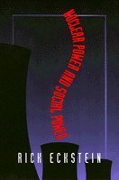

A critical examination of the Shoreham and Seabrook nuclear power plants and the way expensive corporate initiatives purported as good for social "progress" or "economic growth" actually serve the parochial interests of powerful organizations and classes
A critical examination of the Shoreham and Seabrook nuclear power plants and the way expensive corporate initiatives purported as good for social "progress" or "economic growth" actually serve the parochial interests of powerful organizations and classes
|  |
Nuclear Power and Social Power
Rick Eckstein
paper EAN: 978-1-56639-486-4 (ISBN: 1-56639-486-4)
$31.95, Nov 96, Available
cloth EAN: 978-1-56639-485-7 (ISBN: 1-56639-485-6)
$83.50, Nov 96, Out of Stock Unavailable
208 pp
5.5x8.25
1 table
|
Outstanding Academic Title, Choice,
1997
"Rick Eckstein's intriguing analysis sheds new light on the crucial struggles to save the planet from the twin nuclear disasters at Seabrook and Shoreham. His probing look at the financial and investment decisions surrounding these two incredibly expensive mistakes should help us avoid similar debacles down the road."
—Harvey Wasserman, Senior Advisor, Greenpeace USA
We often think of "progress" and "economic growth" as natural developments that benefit all members of society. Nuclear Power and Social Power challenges this view and instead suggests that specific definitions of progress and economic growth can be molded by powerful individuals, organizations, and classes. These definitions, and their manifestation in social policy, often serve narrow parochial interests rather than the common good. Such inequities of social power, hiding behind the semantic facade of "progress" and "economic growth," threaten the existence of democratic communities and societies.
In Nuclear Power and Social Power, Rick Eckstein helps us understand this perspective of social power by examining the civilian nuclear power industry in the United States. More specifically, he compares the Shoreham reactor in New York and the Seabrook reactor in New Hampshire, which faced similar financial and public oppositions yet met very different fates. The $5.5 billion Shoreham plant was the first completed and licensed reactor in the United States never to operate commercially. Seabrook, costing about the same, managed to open even though its primary owner went bankrupt. Despite the differences, the cast of winners and losers was very much the same. In both cases, banks and other powerful corporations won while regular folks and small businesses lost amid a barrage of egalitarian discourse about progress and growth.
Reviews
"Nuclear Power and Social Power is written in a clear and occasionally (appropriately) wry and witty style that makes the book highly accessible to scholars, graduate students, and undergraduate students alike. Rather than 'prove' that one or another of ostensibly competing and mutually exclusive perspectives is better than the others, Eckstein weaves together several perspectives as well as several levels of analysis. His analysis is a wonderful demonstration of sociological imagination at its best: he moves smoothly between individual and structural levels of analysis showing how these interact in a dynamic process. I would recommend this book to colleagues teaching courses in social problems, political sociology, political economy, environmental sociology, and social movements."
—Davita Silfen Glasberg, Department of Sociology, University of Connecticut
"Nuclear Power and Social Power, an exceptional, comprehensive study of the Shoreham and Seabrook nuclear power facilities, offers sophisticated sociological analysis and readable, even entertaining prose. Both theoretically informed and empirically rich, the book sheds light on a remarkable range of topics from corporate power to social movements, from economic development to the prospects for democracy. Rick Eckstein tells a compelling story that deserves a wide audience."
—Edward Royce Associate Professor of Sociology, Rollins College, Florida
"...the book should interest those concerned with the details of commercial nuclear power's demise in the United States as well as the dynamics of community power and local political economies."
—Contemporary Sociology
Contents
Acknowledgments
List of Acronyms
Chronology
Introduction
1. The Many Faces of Social Power
2. The Historical Picture
3. Nuclear Power and Government Regulation
4. Nuclear Power and Corporate Power
5. Nuclear Power and Local Political Economies
6. Nuclear Power, Social Power, and Democracy
Notes
References
Index
About the Author(s)
Rick Eckstein is Assistant Professor of Sociology at Villanova University.
Subject Categories
Sociology
Political Science and Public Policy
© 2015 Temple University. All Rights Reserved. This page: http://www.temple.edu/tempress/titles/1210_reg.html.